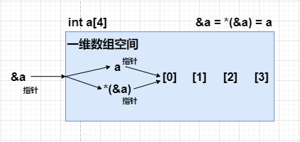
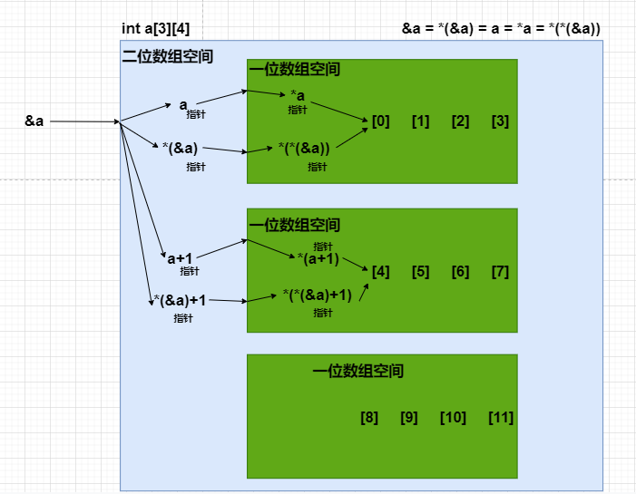

一维数组指针和二维数组指针
首先给出几个定义
typedef int (*p1x4)[4]; //定义数据类型, p1x4这种类型为指向含4个int元素的1维数组的指针
typedef int (*p3x4)[3][4];//定义数据类型, p3x4这种类型为指向含3x4个int元素的2维数组的指针
一维数组 int a[4]

&a = *(&a) = a,数组第一个元素地址和数组整体空间地址是重合的,所以这三个地址值是相同的,但是地址代表的含义是不同的
a是个指针指向数组空间中第一个元素的指针,指针类型为:int *。
&a是个指针指向整个数组空间的指针,也就是指向含4个int元素的一维数组,地址类型同:int (*p)[4]
*(&a)和a等价
#include <iostream>
using namespace std;
int main()
{
int b[4] = {0,1,2,3};
cout << "研究一维数组 : " << endl;
cout << "特殊地址的比较 : &b=" << &b << " *(&b)=" << *(&b) << " b=" << b << endl;
cout << "" << endl;
cout << "b是指向数组空间中第一个元素 : " << endl;
cout << "b对应第一个元素 地址 = " << b <<" *b = " << *b << endl;
cout << "b+1对应第二个元素 地址 = " << b+1 << " *(b+1) = " << *(b+1) << endl;
cout << "b+1对应第三个元素 地址 = " << b+2 << " *(b+2) = " << *(b+2) << endl;
cout << "b+1对应第四个元素 地址 = " << b+3 << " *(b+3) = " << *(b+3) << endl;
cout << "" << endl;
cout << "&b是指向整个数组空间中 : " << endl;
cout << "*(*(&b))对应第一个元素 地址 = " << *(&b) << " *(*(&b)) = " << *(*(&b)) << endl;
cout << "*(&b)+1等同b+1 地址 = " << *(&b)+1 << endl;
cout << "&b+1是偏移数组所占的字节数 地址 = " << &b+1 << endl;
cout << "" << endl;
return 0;
}
/*
运行环境 x86_64 linux
研究一维数组 :
特殊地址的比较 : &b=0x7ffde6c98360 *(&b)=0x7ffde6c98360 b=0x7ffde6c98360
b是指向数组空间中第一个元素 :
b对应第一个元素 地址 = 0x7ffde6c98360 *b = 0
b+1对应第二个元素 地址 = 0x7ffde6c98364 *(b+1) = 1
b+1对应第三个元素 地址 = 0x7ffde6c98368 *(b+2) = 2
b+1对应第四个元素 地址 = 0x7ffde6c9836c *(b+3) = 3
&b是指向整个数组空间中 :
*(*(&b))对应第一个元素 地址 = 0x7ffde6c98360 *(*(&b)) = 0
*(&b)+1等同b+1 地址 = 0x7ffde6c98364
&b+1是偏移数组所占的字节数 地址 = 0x7ffde6c98370
*/
二维数组 int b[3][4]

相比较一维数组,二维数组的指针更为复杂,比一维数组多了一层
#include <iostream>
using namespace std;
int main()
{
int a[3][4] = {{0,1,2,3},{4,5,6,7},{8,9,10,11}};
cout << "研究二维数组 : " << endl;
cout << "特殊地址的比较 : &a=" << &a << " *(&a)=" << *(&a) << " a=" << a << " *a=" << a << " *(*(&a))" << *(*(&a)) << endl;
//先把三个元素的地址打出来用作对照
cout << "a[0][0]的地址 = " << &a[0][0] << endl;
cout << "a[1][0]的地址 = " << &a[1][0] << endl;
cout << "a[2][0]的地址 = " << &a[2][0] << endl;
cout << endl;
cout << "a是一个数组指针指向{0,1,2,3} a的地址=" << a << endl;
cout << "*a是指向第一行数组的第一个元素的指针 地址=" << *a <<" *(*a)=" << *(*a) << endl;
cout << "*a+1是指向第一行数组的第二个元素的指针 地址=" << *a+1 <<" *(*a+1)=" << *(*a+1) << endl;
cout << "*(a+1)+1是指向第二行数组的第二个元素的指针 地址=" << *(a+1)+1 <<" *(*(a+1)+1)=" << *(*(a+1)+1) << endl;
cout << endl;
cout << "*(*(&a))是指向第一行数组的第一个元素的指针 地址=" << *(*(&a)) << " *(*(*(&a)))=" << *(*(*(&a))) << endl;
cout << "*(*(&a))+1是指向第一行数组的第二个元素的指针 地址=" << *(*(&a))+1 << " *(*(*(&a))+1)=" << *(*(*(&a))+1) << endl;
cout << "*(*(&a)+1)+1是指向第二行数组的第二个元素的指针 地址=" << *(*(&a)+1)+1 << " *(*(*(&a)+1)+1)=" << *(*(*(&a)+1)+1) << endl;
return 0;
}
/*
运行环境 x86_64 linux
研究二维数组 :
特殊地址的比较 : &a=0x7ffcf3c4a050 *(&a)=0x7ffcf3c4a050 a=0x7ffcf3c4a050 *a=0x7ffcf3c4a050 *(*(&a))0x7ffcf3c4a050
a[0][0]的地址 = 0x7ffcf3c4a050
a[1][0]的地址 = 0x7ffcf3c4a060
a[2][0]的地址 = 0x7ffcf3c4a070
a是一个数组指针指向{0,1,2,3} a的地址=0x7ffcf3c4a050
*a是指向第一行数组的第一个元素的指针 地址=0x7ffcf3c4a050 *(*a)=0
*a+1是指向第一行数组的第二个元素的指针 地址=0x7ffcf3c4a054 *(*a+1)=1
*(a+1)+1是指向第二行数组的第二个元素的指针 地址=0x7ffcf3c4a064 *(*(a+1)+1)=5
*(*(&a))是指向第一行数组的第一个元素的指针 地址=0x7ffcf3c4a050 *(*(*(&a)))=0
*(*(&a))+1是指向第一行数组的第二个元素的指针 地址=0x7ffcf3c4a054 *(*(*(&a))+1)=1
*(*(&a)+1)+1是指向第二行数组的第二个元素的指针 地址=0x7ffcf3c4a064 *(*(*(&a)+1)+1)=5
*/
总结
做题的时候,可以从数组空间指针开始推导,以二维数组为例,&a取地址为*(&a)指向一维数组整体空间,*(&a)取地址为*(*(&a))则指向一维数组空间中第一个元素,*(*(&a))取地址为*(*(*(&a)))获取元素值。
例题
int a[3];
int *b = a;
int *c = &a; //错误 a的数据类型是int (*)[3],而不是int *,所以必须以int (*c)[3] = &a
int (*c)[3] = &a; //正确 定义了int (*c)[3] = &a, *c等价与a,可以使用(*c)[0]取得a[0],(*c)[1]取得a[1],(*c)[2]取得a[2]。
int *d = &a[0];
int *e = &a[1];
int *f = &a[2];